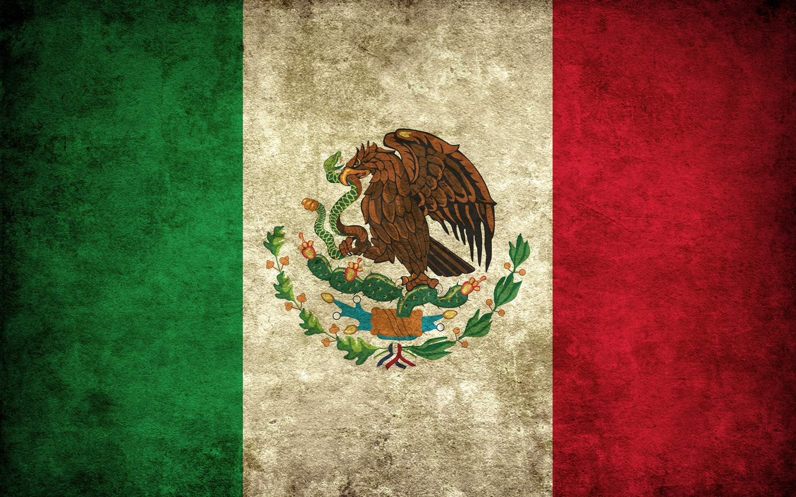
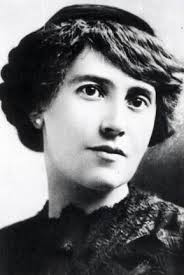
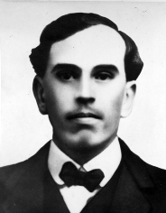
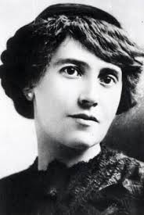
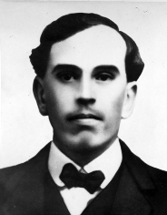

"Revolución Mexicana"
Introducción
Una de las grandes revoluciones sociales del siglo tuvo lugar en América Latina. México estaba bajo el férreo control del dictador Porfirio Díaz y aunque su política económica favoreció el progreso comercial y la producción mexicana, los beneficios se repartían entre los miembros de una oligarquía excluyente. Para 1910, el 85% de la tierra mexicana le pertenecía a menos del 1% de la población. Los campesinos se quedaron sin tierras y sin trabajo y sufrían a diario los efectos del hambre y la pobreza. Y como consecuencia de esa desigualdad , la población se levanto en armas.


 
